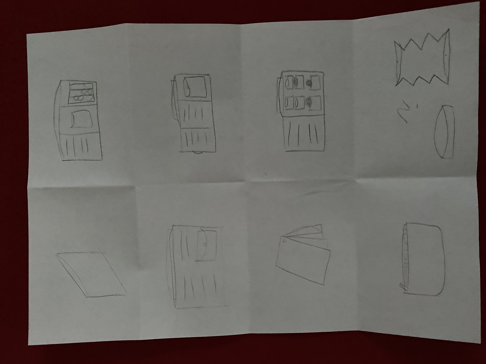
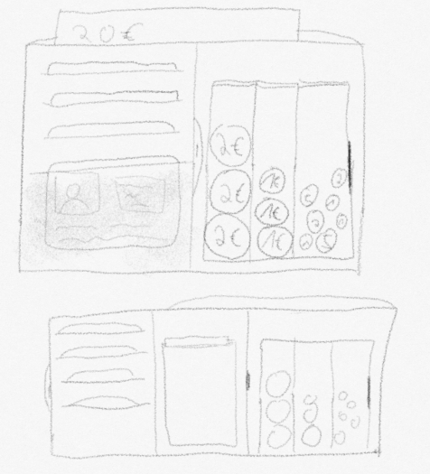
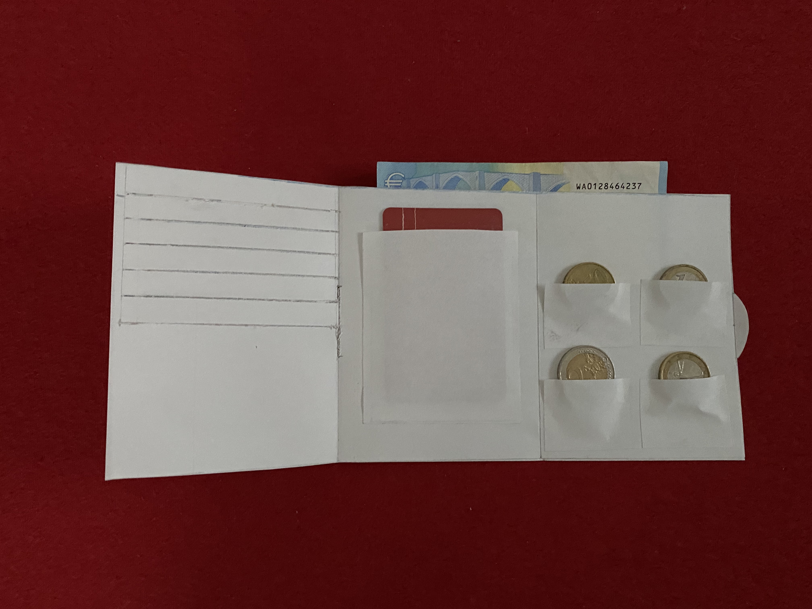
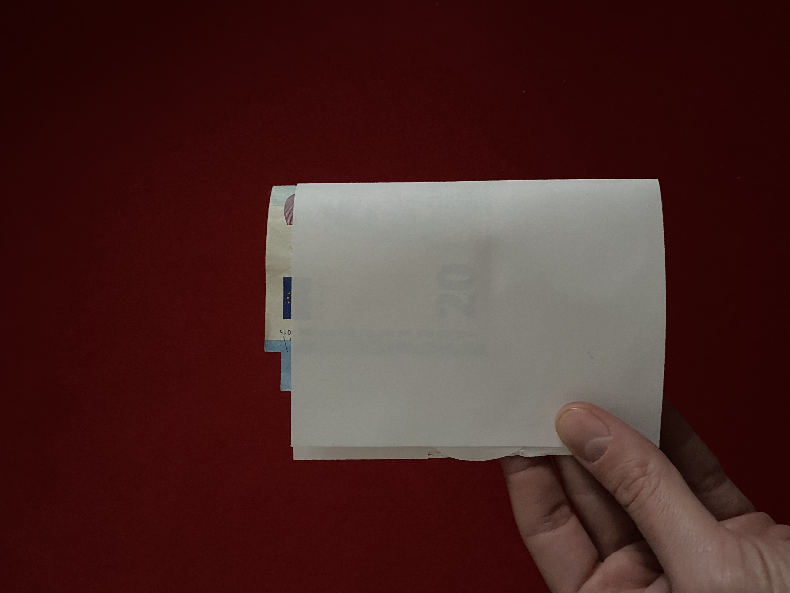

Empathize:
Q: How many cards are in your wallet? A: 13 electronical cards, 4 paper cards
Q: Is your coin pocket always filled? A: It's not always filled a lot
Q: Do you use a shopping card chip? A: No, but might be convenient
Q: How much cash in your wallet is ordinary? A: About 20€
Q: What is more important: functionality, design, or both equally? A: Both equally
Q: Minimalistic or much space? A: Minimalistic
Q: Do you have photos in your wallet? A: No
Q: Where is your wallet located? A: Back pocket of pants
Q: Have you lost your wallet the last 5 years? A: No
Q: What is your favorite color? A: Maybe black
Q: Which material is your wallet made of? A: Leather
Q: Is sustainability important to you? A: I'd say yes
Q: How often do you buy a new wallet? A: Only if the current one broke
Q: What is you maximum price you'd pay for a wallet? A: 50€
Q: Do you like zippers on wallets? A: Would be OK
Define:
What's important?
Point of view
As a wallet user, it's important to not create a mess in my wallet. I want a wallet which is so thin, that I could easily sit on it without creating any damage.
I merely use electronical cards instead of cash but still have the need to store at least some cash.
I'd appreciate a robust, yet minimalistic and thin design.
Ideate:
Prototype:
Test:
Feedback: The first prototype is OK, but there is a problem with taking out the coins from the coin pocket
Prototype iteration:
 